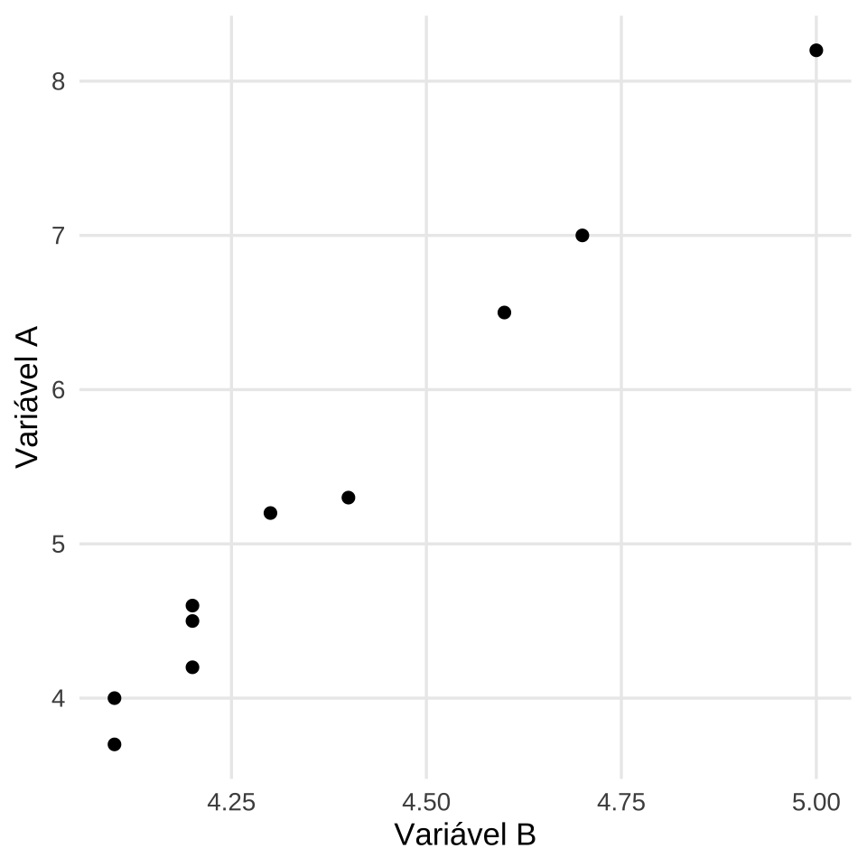
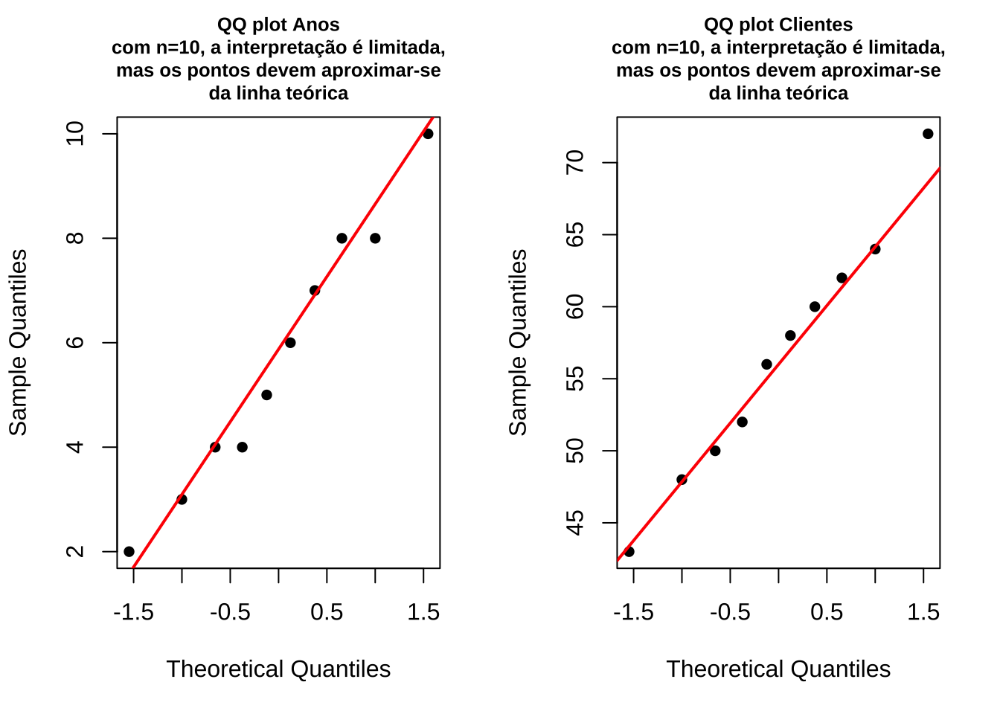
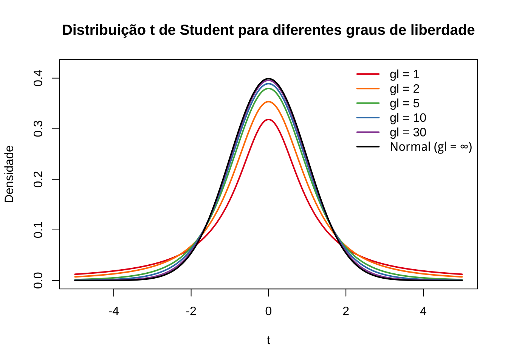

Capítulo 12 Introdução às Medidas de Associação para Variáveis Quantitativas

“In theory, theory and practice are the same. In practice, they are not […]” (Benjamin Brewster, 1882 - Albert Einstein, Richard Feynman, Yogi Berra, ?)
O coeficiente de correlação linear de Pearson insere-se no contexto da análise bidimensional — etapa da análise exploratória de dados que sucede o estudo univariado das variáveis (medidas de posição, dispersão e quantis) e volta-se para o exame conjunto de duas variáveis quantitativas.
De forma análoga a como a média e o desvio padrão resumem, univariadamente, a posição e a dispersão de uma única variável, o coeficiente \(r\) constitui uma estatística descritiva bivariada: resume em um único valor a existência, a direção e a intensidade da associação linear entre duas variáveis quantitativas.
12.1 Etimologia e contexto histórico
O prefixo latino co remete a significados como juntamente, mutuamente, colaboração, união ou até simultaneidade.
Correlação significa, portanto, uma relação mútua entre dois termos, uma correspondência.
Em Correlations and their Measurement, chiefly from Anthropometric Data, apresentado à Royal Society of London em dezembro de 1888, Francis Galton observou:
Co-relação (sic) ou correlação de estrutura é uma expressão muito usada em biologia, e principalmente naquele ramo que se refere à hereditariedade, e a ideia está ainda mais presente do que a expressão; mas eu não tenho conhecimento de nenhuma tentativa anterior de defini-la claramente, de traçar seu modo de ação em detalhes ou de mostrar como medir seu grau (tradução livre).
Galton afirmou que as dimensões de dois órgãos são ditos correlacionadas quando a variação de um é acompanhada, na média, pela variação para mais ou menos no outro. Assim, o comprimento do braço é considerado correlacionado com o da perna, porque uma pessoa com um braço longo geralmente tem uma perna longa e vice-versa.
Se a correlação for próxima, então uma pessoa com um braço muito longo geralmente teria uma perna muito longa.
Se for moderadamente próxima, então o comprimento de sua perna seria geralmente apenas longo, não muito longo.
E se não houvesse correlação nenhuma, então o comprimento de sua perna seria, em média, mediano.

“Diagrama de dispersão padronizado entre estatura e cúbito segundo Galton (1888), com \(n = 348\) homens adultos. Cada variável é expressa em desvios em relação à sua mediana \(M\), na unidade \(Q = \frac{1}{2}(Q_3 - Q_1)\) (o probable error ). Os círculos indicam as posições medianas dos cúbitos para cada classe de estatura; as cruzes indicam as posições medianas das estaturas para cada classe de cúbito. A linha contínua representa a tendência conjunta dessas posições medianas, cuja inclinação expressa o coeficiente de correlação \(r = 0{,}8\). As linhas tracejadas, paralelas à linha central, delimitam o intervalo que contém metade das observações para cada valor fixado, sendo sua largura determinada por \(f = \sqrt{1 - r^2}\).”
12.2 Conceitos Correlatos
12.2.1 Correlação e autocorrelação
Correlação faz referência à relação existente entre variáveis, digamos X e Y. Essa relação pode assumir diferentes padrões: linear ou não linear (quadrática, cúbica, exponencial, …).
Autocorrelação refere-se à correlação dos valores de uma variável consigo mesma em diferentes defasagens temporais (lags), comumente chamada de série temporal, ou em diferentes defasagens espaciais, nas quais a defasagem é definida pela distância ou pela vizinhança entre unidades espaciais.
12.2.2 Diagrama de dispersão ( scatterplot )
Introduzidos por John F. W. Herschel em On the Investigation of the Orbits of revolving Double Stars; being a Supplement to a Paper entitled “Micrometrical Measures of 364 Double Stars” (1833) e popularizados por Francis Galton em Regression Towards Mediocrity in Hereditary Stature (1886), os diagramas de dispersão ( scatterplot ) são representações gráficas dos valores de duas ou mais variáveis.

Figure 12.1: Ângulo de posição da estrela dupla γ Virginis em função do ano de observação, reproduzido de Herschel (1833). Os pontos sólidos representam as observações individuais; os círculos ao redor de cada ponto são proporcionais ao peso atribuído à observação. A curva em vermelho corresponde à interpolação gráfica traçada pelo próprio Herschel para determinar a órbita — método que, segundo Friendly & Denis (2005), constitui o primeiro uso documentado do diagrama de dispersão na história da estatística.
O gráfico de dispersão utiliza coordenadas cartesianas para exibir valores de um conjunto de dados. Os dados são exibidos como uma coleção de pontos, cada um com o valor de uma variável determinando a posição no eixo horizontal e o valor da outra variável determinando a posição no eixo vertical (em caso de duas variáveis).
12.2.3 Correlação versus causação
Embora a análise de correlação trate de algum modo com o comportamento de uma variável em relação a outra(s), isso não implica necessariamente em causação; ie. essa medida estatística não implica no estabelecimento inequívoco de uma relação causal.
Tyler Vigen é autor, programador e consultor de gestão norte-americano. Seu projeto mais conhecido, Spurious Correlations (Correlações Espúrias), publicado on line originalmente em maio de 2014 e atualizado em janeiro de 2024, exibe correlações aleatórias extraídas de dados triviais, apresentadas em gráficos de linhas que ilustram os perigos de correlacionar variáveis sem causalidade.
O projeto é construído sobre uma base de 25.237 variáveis, cruzadas sistematicamente para identificar pares com alta correlação estatística — processo conhecido como data dredging (garimpo de dados).
O resultado é uma coleção de associações numericamente expressivas como a que se segue

Figure 12.2: Gráfico de dispersão das variáveis A e B
porém desprovidas de qualquer nexo causal plausível.
| Variáveis | 2000 | 2001 | 2002 | 2003 | 2004 | 2005 | 2006 | 2007 | 2008 | 2009 |
|---|---|---|---|---|---|---|---|---|---|---|
| A: consumo anual per capita de margarina (lbs.) | 8,2 | 7,0 | 6,5 | 5,3 | 5,2 | 4,0 | 4,6 | 4,5 | 4,2 | 3,7 |
| B: taxa de divórcios no Maine () | 5,0 | 4,7 | 4,6 | 4,4 | 4,3 | 4,1 | 4,2 | 4,2 | 4,2 | 4,1 |
Para o estabelecimento de relações causais, é necessário recorrer a considerações teóricas a priori sobre os mecanismos que governam as variáveis estudadas, uma vez que a correlação, por si só, não é condição suficiente para a inferência causal.
12.2.4 Correlação linear versus regressão linear
A análise de correlação tem como objetivo medir a força e a direção da associação linear entre duas variáveis, sem distinguir entre variável dependente e independente.
A análise de regressão linear, por sua vez, tem como objetivo primário expressar matematicamente a relação entre uma variável dependente e uma ou mais variáveis independentes por meio de uma função, de modo a possibilitar a obtenção de estimativas para valores não observados, a construção de intervalos de confiança para essas estimativas e o teste de hipóteses sobre os parâmetros do modelo.
12.2.5 Associações
Associações Funcionais: relações determinísticas expressas por sentenças matemáticas, nas quais o valor de uma variável é inteiramente determinado pelo valor da outra. Exemplos: área do retângulo (\(A = a \cdot b\)), densidade de massa (\(d_m = \frac{m}{V}\)), perímetro de uma circunferência (\(C = 2\pi R\)).
Associações Estatísticas: relações não determinísticas estabelecidas entre duas ou mais variáveis cujos valores foram coletados em uma amostra, nas quais a associação é sujeita a variabilidade aleatória.
Essas relações podem ser aproximadas por diferentes formas funcionais:
- Lineares; ou
- Não lineares.
Os valores de \(X\) e \(Y\) podem estar diretamente associados (positiva), quando ambas as variáveis variam no mesmo sentido, ou inversamente associados (negativa), quando variam em sentidos opostos. O interesse particular desta seção recai sobre a quantificação do grau de associação linear entre \(X\) e \(Y\).

Figure 12.3: Número de anos de serviço pelo número de clientes dos agentes de uma companhia de seguros
SIMULADOR 1: Considerem as simulações da dispersão de alguns valores de duas variáveis \(X\) e \(Y\). Vemos que em alguns casos nos parece ser razoável tentar exprimir qualquer tipo de relação entre os valores de \(X\) e \(Y\); todavia, há situações onde claramente vemos alguma forma de relação.
12.3 Coeficiente de correlação linear de Pearson
O coeficiente de correlação linear (ou coeficiente de correlação produto momento de Pearson) expressa a medida da intensidade da associação linear entre duas variáveis quantitativas.

Trabalhando-se com dados de uma amostra, o estimador da correlação linear populacional \(\rho\) é definido como a média dos produtos dos escores padronizados das duas variáveis:
\[ r = \frac{1}{n}\sum_{i=1}^{n} \left(\frac{x_i - \bar{x}}{dp(X)}\right)\left(\frac{y_i - \bar{y}}{dp(Y)}\right) \]
em que:
- \(x_{i}\): é o iésimo valor observado da variável X;
- \(y_{i}\): é o iésimo valor observado da variável Y;
- \(\bar{x}\) e \(\bar{y}\) são os valores médios de \(X\) e \(Y\), respectivamente.
- \(dp(X)\) e \(dp(Y)\) são os desvios padrão de \(X\) e \(Y\), respectivamente; e,
- \(n\) é o número de pares de valores observados.
Para fins de cálculo, essa definição pode ser reescrita na forma por desvios:
\[r = \frac{\sum_{i=1}^{n}(x_i - \bar{x})(y_i - \bar{y})}{\sqrt{\sum_{i=1}^{n}(x_i - \bar{x})^2 \cdot \sum_{i=1}^{n}(y_i - \bar{y})^2}},\]
e, equivalentemente, na forma por somas brutas:
\[ r = \frac{\sum _{i=1}^{n}{x}_{i} \cdot {y}_{i} - \frac{\left(\sum _{i=1}^{n}{x}_{i}\right)\left(\sum _{i=1}^{n}{y}_{i}\right)}{n}}{\sqrt{\left[\sum _{i=1}^{n}{x}_{i}^{2}-\frac{{\left(\sum _{i=1}^{n}{x}_{i}\right)}^{2}}{n}\right]\cdot \left[\sum_{i=1}^{n}{y}_{i}^{2}-\frac{{\left(\sum _{i=1}^{n}{y}_{i}\right)}^{2}}{n}\right]}}, \]
Ou ainda, simplificadamente, numa forma compacta:
\[ r = \frac{{S}_{xy}}{\sqrt{{S}_{xx}\cdot {S}_{yy}}} \]
em que:
\[ S_{xy} = \sum _{i=1}^{n} x_{i}y_{i} - \frac{\sum _{i=1}^{n}x_{i}\cdot\sum _{i=1}^{n}y_{i}}{n}, \]
\[ S_{xx} = \sum _{i=1}^{n} x_{i}^{2} - \frac{(\sum _{i=1}^{n} x_{i})^{2}}{n}, \]
\[ {S}_{yy}=\sum _{i=1}^{n}y_{i}^{2} - \frac{(\sum _{i=1}^{n} y_{i})^{2}}{n}. \]
Observações:
\(r\) é adimensional;
a faixa de variação do coeficiente de correlação linear de Pearson é: \(-1 \le r \le 1\);
a correlação linear observada entre \(X\) e \(Y\) é simétrica; ou seja, é a mesma que se medida entre as variáveis \(Y\) e \(X\);
mede apenas a associação linear entre duas variáveis e, portanto, não tem sentido usá-lo na quantificação de relações que não sejam lineares;
a possibilidade de uma correlação linear negativa virá do resultado do numerador (\(S_{xy}\)), pois no denominador temos duas somas de quadrados;
o coeficiente de correlação mede apenas a intensidade das relações lineares entre \(X\) e \(Y\) e não estabelece per si nenhuma relação de causação.
Se \(r \approx 0\), não há evidência de relação linear entre as variáveis na amostra observada. Neste caso, variações em uma variável não estão linearmente associadas a variações sistemáticas na outra.
Se \(r \neq 0\), há evidência de relação linear entre as variáveis, cuja direção e intensidade são determinadas pelo sinal e magnitude de \(r\):
- quando \(r > 0\), a relação linear é positiva: incrementos em uma variável tendem a ser acompanhados por incrementos na outra, e decréscimos em uma variável tendem a ser acompanhados por decréscimos na outra;
- quando \(r < 0\), a relação linear é negativa: incrementos em uma variável tendem a ser acompanhados por decréscimos na outra, e vice-versa.
O cálculo do coeficiente da correlação linear assemelha-se a uma análise de variância.

Vejamos:
\[ y_i - \stackrel{-}{y} = (\hat{y_i} - \stackrel{-}{y}) + (y_i - \hat{y_i}). \]
Elevando-se ao quadrado ambos os termos, para todos os valores observados, teremos:
\[ \sum _{i=1}^{n} ({y_{i}} - \stackrel{-}{y})^{2} = \sum _{i=1}^{n} (\hat{y_{i}} - \stackrel{-}{y})^{2} + \sum _{i=1}^{n} (y_{i} - \hat{y_{i}})^{2} \]
A quantidade à esquerda mede a variação total dos y (Soma de quadrados total) e as quantidades à direita são a Soma de quadrados da regressão e a Soma de quadrados dos resíduos.
A definição abaixo exprime a fração da variação total dos \(y\) que está sendo explicada por sua regressão linear com \(x\):
\[
R^{2}=\frac{\sum _{i=1}^{n} (\hat{y_{i}} - \stackrel{-}{y})^{2}}{\sum _{i=1}^{n} ({y_{i}} - \stackrel{-}{y})^{2}}\\
R^{2}=\frac{\text{variação explicada}}{\text{variação total}}
\]
é conhecida como coeficiente de determinação (\(R^{2}\)). Note que o coeficiente de determinação é o quadrado do coeficiente de correlação. Ele indica a proporção da variabilidade em Y que é explicada pela variação em X por meio da reta de regressão.
Exemplo 1: Uma companhia de seguros deseja verificar se existe relação linear entre o número de anos de serviço e o número de clientes de seus agentes. Para isso, foram coletados dados de 10 agentes, conforme a tabela a seguir. Existe alguma relação linear entre as variáveis? Construa o diagrama de dispersão e calcule o coeficiente de correlação linear pelas três formas equivalentes.
| Agente | Anos de serviço (X) | Número de clientes (Y) |
|---|---|---|
| A | 2 | 48 |
| B | 3 | 50 |
| C | 4 | 56 |
| D | 5 | 52 |
| E | 4 | 43 |
| F | 6 | 60 |
| G | 7 | 62 |
| H | 8 | 58 |
| I | 8 | 64 |
| J | 10 | 72 |

Figure 12.4: Número de anos de serviço pelo número de clientes dos agentes de uma companhia de seguros
Forma 1 — Escores padronizados
Com \(\bar{x} = 5{,}7\), \(\bar{y} = 56{,}5\), \(dp(X) = 2{,}41\) e \(dp(Y) = 8{,}11\):
| Agente | xi | yi | \(x_i - \overline{x}\) | \(y_i - \overline{y}\) | zxi | zyi | zxi ⋅ zyi |
|---|---|---|---|---|---|---|---|
| A | 2 | 48 | −3, 7 | −8, 5 | −1, 54 | −1, 05 | 1, 617 |
| B | 3 | 50 | −2, 7 | −6, 5 | −1, 12 | −0, 80 | 0, 897 |
| C | 4 | 56 | −1, 7 | −0, 5 | −0, 71 | −0, 06 | 0, 043 |
| D | 5 | 52 | −0, 7 | −4, 5 | −0, 29 | −0, 55 | 0, 161 |
| E | 4 | 43 | −1, 7 | −13, 5 | −0, 71 | −1, 66 | 1, 179 |
| F | 6 | 60 | 0, 3 | 3, 5 | 0, 12 | 0, 43 | 0, 052 |
| G | 7 | 62 | 1, 3 | 5, 5 | 0, 54 | 0, 68 | 0, 367 |
| H | 8 | 58 | 2, 3 | 1, 5 | 0, 95 | 0, 18 | 0, 171 |
| I | 8 | 64 | 2, 3 | 7, 5 | 0, 95 | 0, 92 | 0, 874 |
| J | 10 | 72 | 4, 3 | 15, 5 | 1, 78 | 1, 91 | 3, 408 |
| Total | 57 | 565 | 0 | 0 | 8, 769 |
Sendo \(n = 10\):
\[ r = \frac{1}{n}\sum_{i=1}^{n} z_{x_i} \cdot z_{y_i} = \frac{8{,}769}{10} = 0{,}877 \]
Forma 2 — Desvios em relação à média
| Agente | xi | yi | \(x_i - \overline{x}\) | \(y_i - \overline{y}\) | \((x_i-\overline{x})(y_i-\overline{y})\) | \((x_i-\overline{x})^2\) | \((y_i-\overline{y})^2\) |
|---|---|---|---|---|---|---|---|
| A | 2 | 48 | −3, 7 | −8, 5 | 31, 45 | 13, 69 | 72, 25 |
| B | 3 | 50 | −2, 7 | −6, 5 | 17, 55 | 7, 29 | 42, 25 |
| C | 4 | 56 | −1, 7 | −0, 5 | 0, 85 | 2, 89 | 0, 25 |
| D | 5 | 52 | −0, 7 | −4, 5 | 3, 15 | 0, 49 | 20, 25 |
| E | 4 | 43 | −1, 7 | −13, 5 | 22, 95 | 2, 89 | 182, 25 |
| F | 6 | 60 | 0, 3 | 3, 5 | 1, 05 | 0, 09 | 12, 25 |
| G | 7 | 62 | 1, 3 | 5, 5 | 7, 15 | 1, 69 | 30, 25 |
| H | 8 | 58 | 2, 3 | 1, 5 | 3, 45 | 5, 29 | 2, 25 |
| I | 8 | 64 | 2, 3 | 7, 5 | 17, 25 | 5, 29 | 56, 25 |
| J | 10 | 72 | 4, 3 | 15, 5 | 66, 65 | 18, 49 | 240, 25 |
| Total | 57 | 565 | 0 | 0 | 171, 50 | 58, 10 | 658, 50 |
Portanto:
\[ r = \frac{\sum_{i=1}^{n}(x_i - \bar{x})(y_i - \bar{y})}{\sqrt{\sum_{i=1}^{n}(x_i - \bar{x})^2 \cdot \sum_{i=1}^{n}(y_i - \bar{y})^2}} = \frac{171{,}50}{\sqrt{58{,}10 \cdot 658{,}50}} = \frac{171{,}50}{\sqrt{38{.}259{,}35}} = \frac{171{,}50}{195{,}60} = 0{,}877 \]
Forma 3 — Somas brutas
| Agente | xi | yi | xiyi | xi2 | yi2 |
|---|---|---|---|---|---|
| A | 2 | 48 | 96 | 4 | 2304 |
| B | 3 | 50 | 150 | 9 | 2500 |
| C | 4 | 56 | 224 | 16 | 3136 |
| D | 5 | 52 | 260 | 25 | 2704 |
| E | 4 | 43 | 172 | 16 | 1849 |
| F | 6 | 60 | 360 | 36 | 3600 |
| G | 7 | 62 | 434 | 49 | 3844 |
| H | 8 | 58 | 464 | 64 | 3364 |
| I | 8 | 64 | 512 | 64 | 4096 |
| J | 10 | 72 | 720 | 100 | 5184 |
| Totais | 57 | 565 | 3392 | 383 | 32581 |
Sendo \(n = 10\):
\[ S_{xy} = \sum_{i=1}^{n} x_i y_i - \frac{\sum_{i=1}^{n} x_i \cdot \sum_{i=1}^{n} y_i}{n} = 3392 - \frac{57 \cdot 565}{10} = 3392 - 3220{,}5 = 171{,}5 \]
\[ S_{xx} = \sum_{i=1}^{n} x_i^2 - \frac{\left(\sum_{i=1}^{n} x_i\right)^2}{n} = 383 - \frac{57^2}{10} = 383 - 324{,}9 = 58{,}1 \]
\[ S_{yy} = \sum_{i=1}^{n} y_i^2 - \frac{\left(\sum_{i=1}^{n} y_i\right)^2}{n} = 32581 - \frac{565^2}{10} = 32581 - 31922{,}5 = 658{,}5 \]
Portanto:
\[ r = \frac{S_{xy}}{\sqrt{S_{xx} \cdot S_{yy}}} = \frac{171{,}5}{\sqrt{58{,}1 \cdot 658{,}5}} = \frac{171{,}5}{\sqrt{38{.}259{,}85}} = \frac{171{,}5}{195{,}60} = 0{,}877 \]
## [1] 0.876812.4 Teste de hipóteses para a correlação linear na população
12.4.1 Teste de hipóteses para \(\rho = \rho_0 = 0\)
O coeficiente de correlação amostral \(r\) é uma estimativa do coeficiente de correlação populacional \(\rho\).
Sendo \(r\) é uma variável aleatória, ie, uma função de duas variáveis aleatórias, possui uma distribuição amostral. Assim, para se realizar qualquer inferência concernentes a \(\rho\), a partir de \(r\), precisamos ter conhecimento da distribuição amostral de \(r\).
Um inferência essencial é testar a existência de correlação entre as populações e, para tanto um teste de hipóteses com estrutura bilateral pode ser proposto:
\[ \begin{cases} H_{0}:\rho =0 \hspace{0.1cm} \text{, ie. a correlação linear entre X e Y é nula} \\ H_{1}:\rho \ne 0 \hspace{0.1cm} \text{, ie. a correlação linear entre X e Y não é nula} \\ \end{cases} \]
Lembrando a tradicional analogia de que um teste de hipóteses guarda uma certa semelhança a um julgamento: caso não haja indício forte o suficiente para comprovar a culpa do acusado ele é tecnicamente declarado não culpado (e não inocente).
Seguindo esse raciocínio, o indício ou evidência que nos permitirá rejeitar a hipótese nula virá de uma evidência amostral e a significância dessa evidência amostral será calculada a partir da estatística (\({t}_{calc}\)), que considera o o coeficiente de correlação amostral \(r\) e o tamanho da amostra \(n\).
\[ {t}_{calc}=\frac{r\cdot\sqrt{n-2}}{\sqrt{1-{r}^{2}}}\\ T \sim t_{(n-2)} \]
Para que o teste de correlação de Pearson seja exato, a distribuição bivariada \((X,Y)\) deve seguir uma distribuição normal bivariada. No entanto, o teste é razoavelmente robusto a violações deste pressuposto quando o tamanho amostral é grande (n>30).
Para amostras pequenas ou quando há forte evidência de não-normalidade, alternativas não-paramétricas como o coeficiente de correlação de Spearman devem ser consideradas.
# Dados
dados <- data.frame(
anos <- c(2,3,4,5,4,6,7,8,8,10),
clientes <- c(48,50,56,52,43,60,62,58,64,72)
)
# Configurar layout para múltiplos gráficos
par(mfrow = c(1, 2))
# 1. Gráfico Q-Q para Anos
qqnorm(dados$anos, main = "QQ plot Anos\ncom n=10, a interpretação é limitada,\nmas os pontos devem aproximar-se\nda linha teórica", pch = 16, cex.main=0.8)
qqline(dados$anos, col = "red", lwd = 2)
# 2. Gráfico Q-Q para Clientes
qqnorm(dados$clientes, main = "QQ plot Clientes\ncom n=10, a interpretação é limitada,\nmas os pontos devem aproximar-se\nda linha teórica", pch = 16, cex.main=0.8)
qqline(dados$clientes, col = "red", lwd = 2)
Rejeita-se a hipótese nula ($H_{0}:= 0 ) se o valor da estatística calculada \(t_{calc}\) for tão extremo que se verifique:
\[ t_{calc} \le {t}_{tab[\frac{\alpha }{2};\left(n-2\right)]}\\ \text{ou}\\ t_{calc} \ge {t}_{tab[1-\frac{\alpha }{2};\left(n-2\right)]}\\ \]
ou, equivalentemente, \(|t_{calc}| \ge {t}_{tab\left[1-\frac{\alpha}{2};\left(n-2\right)\right]}\), em que \(t_{tab}\) é o quantil associado na distribuição “t” de Student ao nível de significância pretendido (\(\alpha\)) com \((n-2)\) graus de liberdade.
O teste de hipótese proposto é um teste bilateral; assim, o gráfico apropriado para se decidir pela rejeição ou não da hipótese nula assume a forma mostrada nessa simulação. (SIMULADOR 2 COM t)
O número de graus de liberdade irá determinar qual curva da família dessa distribuição será utilizada, por essa razão, as tabelas apresentam-se individualizadas por nível de significância e graus de liberdade.
# Dados
gl <- c(1, 2, 5, 10, 30, Inf)
x <- seq(-5, 5, length.out = 500)
cores <- c("#e41a1c", "#ff7f00", "#4daf4a", "#377eb8", "#984ea3", "#000000")
plot(x, dnorm(x), type = "n",
ylim = c(0, 0.42), xlab = "t", ylab = "Densidade",
main = "Distribuição t de Student para diferentes graus de liberdade")
for (i in seq_along(gl)) {
if (is.finite(gl[i])) {
y <- dt(x, df = gl[i])
} else {
y <- dnorm(x)
}
lines(x, y, col = cores[i], lwd = 2)
}
legend("topright",
legend = c(paste("gl =", gl[-length(gl)]), "Normal (gl = \u221e)"),
col = cores,
lwd = 2,
bty = "n")
As curvas da família “t” possuem simetria em relação a um eixo vertical no valor de máxima densidade. O valor tabelado dessa estatística acha-se associado à área sob ela pois é uma função densidade de probabilidade: a totalidade da área sob essa curva é igual a 1 (probabilidade de 100%)
Assim, se consultarmos em uma tabela o valor “t” para um nível de significância \(\alpha\) qualquer, correspodente assim a um nível de confiança de (\(1-\alpha\)), qualquer veremos que ele será igual, em módulo, ao valor “t” no outro extremo dessa curva.
Por essa razão muitas tabelas apresentam valores dessa estatística sob os títulos de monocaudal ou bicaudal pois estão apresentando os valores para um determinado nível de significância (\(\alpha\)): área sob a curva, situado apenas em um lado (ou subdividido nos dois ramos da curva nas tabelas chamadas “bilaterais”).
Exemplo 2: Faça o teste de hipóteses para a correlação linear \(\rho\) a partir da correlação amostral \(r\) calculada no exercício do número de clientes em razão do número de anos na companhia, sob um nível de significância (\(\alpha\)) de 0,05.
No exercício referido obtivemos um valor para a correlação linear de Pearson de \(r=0,9727\). A partir desse valor podemos calcular o valor de nossa estatística \({t}_{calc}\) para o teste:
\[
{t}_{calc}=\frac{r\cdot\sqrt{n-2}}{\sqrt{1-{r}^{2}}} = 8,38
\]
Rejeitaremos a hipótese nula (\(H_{0}\)) se:
\[
t_{calc} \le {t}_{tab[\frac{\alpha }{2};\left(n-2\right)]}\\
\text{ou}\\
t_{calc} \ge {t}_{tab[1-\frac{\alpha }{2};\left(n-2\right)]}
\]
Da tabela extraímos o valor de nossa estatística de comparação a um nível de significância \(\alpha=5\%\) e, para um tamanho amostral \(n=6\), temos como graus de liberdade \(n-2=4\) (\(t_{tab}=2,776\)).
## [1] -2.776## [1] 2.776Vê-se que o valor calculado da estatística “t” encontra-se além dos limites estabelecidos pela estatística de comparação (\(t_{tab}\)) para um nível de significância de \(\alpha=5\%\). (SIMULADOR 2 COM t)
# Dados do Exemplo 1
anos <- c(2,3,4,5,4,6,7,8,8,10)
clientes <- c(48,50,56,52,43,60,62,58,64,72)
# Teste usando função nativa do R (para comparação)
teste <- cor.test(anos, clientes)
print(teste)##
## Pearson's product-moment correlation
##
## data: anos and clientes
## t = 5.2, df = 8, p-value = 9e-04
## alternative hypothesis: true correlation is not equal to 0
## 95 percent confidence interval:
## 0.5518 0.9706
## sample estimates:
## cor
## 0.876812.4.2 Teste de hipóteses para \(\rho = \rho_0 \neq 0\): a transformação \(Z\) de Fisher
Para se testar a hipótese \(\rho=\rho_{0}\)
\[ \begin{cases} H_{0}:\rho = \rho_{0} \hspace{0.1cm} \text{, ie. a correlação linear entre X e Y é igual a }\rho_{0} \\ H_{1}:\rho \ne \rho_{0} \hspace{0.1cm} \text{, ie. a correlação linear entre X e Y é diferente de }\rho_{0} \\ \end{cases} \]
utilizamos a estatística \(Z\) (zeta) de Fisher. A transformação \(Z\) proposta por Fisher produz uma estatística que possui distribuição aproximadamente Normal. Para essa situação a estatística a ser utilizada é dada por:
\[ Z= \frac{1}{2}\ln\frac{(1+r)}{(1-r)}. \]
Essa estatística possui uma distribuição aproximadamente Normal, com média e desvio padrão:
\[ \mu_{Z} = \frac{1}{2}\ln\frac{(1+\rho_{0})}{(1-\rho_{0})}\\ \text{e}\\ \sigma_{Z} = \frac{1}{\sqrt{n-3}} \]
Transformando-se \(Z\) em unidades padrão (pela subtração de \(\mu_{Z}\) e divisão por \(\sigma_{Z}\)), chega-se à estatística tabelada:
\[ z = \frac{Z - \mu_{Z}}{\sigma_{Z}} \]
que, sob \(H_0: \rho = \rho_0\), segue aproximadamente uma distribuição Normal padrão \(N(0,1)\).
Exemplo 3: Faça o teste de hipóteses para a correlação linear \(\rho=0{,}95\) a partir da correlação amostral \(r\) calculada no exercício do número de clientes em razão do número de anos na companhia, sob um nível de significância (\(\alpha\)) de \(0{,}05\).
\[ \begin{cases} H_{0}:\rho = 0{,}95 \text{, i.e., a correlação linear entre X e Y é igual a } 0{,}95 \\ H_{1}:\rho \neq 0{,}95 \text{, i.e., a correlação linear entre X e Y é diferente de } 0{,}95 \end{cases} \]
\[ Z = \frac{1}{2}\ln\frac{(1+r)}{(1-r)} = \frac{1}{2}\ln\frac{(1+0{,}877)}{(1-0{,}877)} = \frac{1}{2}\ln\frac{1{,}877}{0{,}123} = \frac{1}{2}\ln(15{,}261) = \frac{1}{2}(2{,}726) = 1{,}363 \]
\[ \mu_{Z} = \frac{1}{2}\ln\frac{(1+\rho_0)}{(1-\rho_0)} = \frac{1}{2}\ln\frac{(1+0{,}95)}{(1-0{,}95)} = \frac{1}{2}\ln\frac{1{,}95}{0{,}05} = \frac{1}{2}\ln(39{,}000) = \frac{1}{2}(3{,}664) = 1{,}832 \]
\[ \sigma_{Z} = \frac{1}{\sqrt{n-3}} = \frac{1}{\sqrt{10-3}} = \frac{1}{\sqrt{7}} = \frac{1}{2{,}646} = 0{,}378 \]
Estatística do teste:
\[ z = \frac{Z - \mu_{Z}}{\sigma_{Z}} = \frac{1{,}363 - 1{,}832}{0{,}378} = \frac{-0{,}469}{0{,}378} = -1{,}241 \]
Para \(\alpha = 0{,}05\) bilateral, o valor crítico é \(z_{\alpha/2} = \pm 1{,}96\). Como \(|z| = 1{,}241 < 1{,}96\), não se rejeita \(H_0\) ao nível de significância de \(5\%\). Os dados não fornecem evidência suficiente para afirmar que a correlação linear populacional é diferente de \(0{,}95\).
12.5 Coeficiente de correlação linear de Spearman
A correlação de Spearman é uma medida de associação não paramétrica que avalia a relação monotônica entre duas variáveis. Diferentemente da correlação de Pearson, que opera sobre os valores brutos e pressupõe linearidade e normalidade, a correlação de Spearman baseia-se nos postos (ranks) atribuídos às observações.
12.5.1 Definição
Sejam \(X\) e \(Y\) duas variáveis aleatórias com \(n\) observações. Os postos de \(X\) e \(Y\) são definidos como \(R(X_i)\) e \(R(Y_i)\), respectivamente.
12.5.2 Atribuição dos postos
Os postos são atribuídos ordenando-se as observações de cada variável separadamente, do menor para o maior valor, e associando a cada observação sua posição na ordenação. Quando duas ou mais observações apresentam o mesmo valor — situação denominada empate (tie) — atribui-se a cada uma delas a média dos postos que ocupariam caso fossem distintas.
Por exemplo, se duas observações empatadas ocupariam os postos 3 e 4, cada uma recebe o posto \(\frac{3+4}{2} = 3{,}5\). Se três observações empatadas ocupariam os postos 5, 6 e 7, cada uma recebe o posto \(\frac{5+6+7}{3} = 6{,}0\).
12.5.3 Fórmulas
O coeficiente de correlação de Spearman é dado por:
\[ r_s = 1 - \frac{6 \sum_{i=1}^{n} d_i^2}{n(n^2 - 1)} \]
em que \(d_i = R(X_i) - R(Y_i)\) é a diferença entre os postos de cada par de observações. Esta fórmula é equivalente ao coeficiente de correlação de Pearson calculado sobre os postos:
\[ r_s = \frac{\sum_{i=1}^{n}\left[R(X_i) - \overline{R(X)}\right]\left[R(Y_i) - \overline{R(Y)}\right]}{\sqrt{\sum_{i=1}^{n}\left[R(X_i) - \overline{R(X)}\right]^2 \sum_{i=1}^{n}\left[R(Y_i) - \overline{R(Y)}\right]^2}} \]
A equivalência entre as duas expressões é válida na ausência de empates (ties). Quando há empates, recomenda-se utilizar a segunda formulação, que produz resultados exatos.
12.5.4 Propriedades
O coeficiente de correlação de Spearman \(r_s\) assume valores no intervalo \([-1, 1]\), sendo que:
- \(r_s = 1\) indica relação monotônica crescente perfeita;
- \(r_s = -1\) indica relação monotônica decrescente perfeita;
- \(r_s = 0\) indica ausência de relação monotônica.
Como a correlação de Spearman opera sobre postos, ela é robusta à presença de outliers e não requer que as distribuições marginais sejam normais, tornando-a adequada a dados ordinais ou contínuos com distribuições assimétricas.
Exemplo 4: Calcule o coeficiente de correlação linear de Spearman dos dados da companhia de seguros.
| xi | yi | xi ordenado | R(Xi) | yi ordenado | R(Yi) | di | di2 |
|---|---|---|---|---|---|---|---|
| 2 | 48 | 2 → posto 1 | 1,0 | 43 → posto 1 | 1,0 | −1, 0 | 1,00 |
| 3 | 50 | 3 → posto 2 | 2,0 | 48 → posto 2 | 2,0 | −1, 0 | 1,00 |
| 4 | 56 | 4 → postos 3 e 4: \(\frac{3+4}{2}\) | 3,5 | 50 → posto 3 | 3,0 | −1, 5 | 2,25 |
| 5 | 52 | 4 → postos 3 e 4: \(\frac{3+4}{2}\) | 3,5 | 52 → posto 4 | 4,0 | 1, 0 | 1,00 |
| 4 | 43 | 5 → posto 5 | 5,0 | 56 → posto 5 | 5,0 | 2, 5 | 6,25 |
| 6 | 60 | 6 → posto 6 | 6,0 | 58 → posto 6 | 6,0 | −1, 0 | 1,00 |
| 7 | 62 | 7 → posto 7 | 7,0 | 60 → posto 7 | 7,0 | −1, 0 | 1,00 |
| 8 | 58 | 8 → postos 8 e 9: \(\frac{8+9}{2}\) | 8,5 | 62 → posto 8 | 8,0 | 2, 5 | 6,25 |
| 8 | 64 | 8 → postos 8 e 9: \(\frac{8+9}{2}\) | 8,5 | 64 → posto 9 | 9,0 | −0, 5 | 0,25 |
| 10 | 72 | 10 → posto 10 | 10,0 | 72 → posto 10 | 10,0 | 0, 0 | 0,00 |
| \(\overline{R(X)} = 5{,}5\) | \(\overline{R(Y)} = 5{,}5\) | 20,00 | |||||
Como há empates em \(X\) (agentes C e E com \(x = 4\), e agentes H e I com \(x = 8\)), utiliza-se a fórmula de Pearson aplicada aos postos, que produz resultado exato.
\[ r_s = \frac{\sum_{i=1}^{n}\left[R(X_i) - \overline{R(X)}\right]\left[R(Y_i) - \overline{R(Y)}\right]}{\sqrt{\sum_{i=1}^{n}\left[R(X_i) - \overline{R(X)}\right]^2 \cdot \sum_{i=1}^{n}\left[R(Y_i) - \overline{R(Y)}\right]^2}} = 0{,}878 \]
Como há empates, o valor correto a reportar é \(r_s = 0{,}878\). A verificação computacional pode ser feita em R:
x <- c(2,3,4,5,4,6,7,8,8,10)
y <- c(48,50,56,52,43,60,62,58,64,72)
cor_spearman=cor(x, y, method = "spearman")
print(paste("O coeficiente de correlação linear de Spearman é", cor_spearman))## [1] "O coeficiente de correlação linear de Spearman é 0.87806510397951"12.5.5 Teste de Hipóteses
O teste de significância para \(r_s\) considera as hipóteses:
\[ \begin{cases} H_{0}:\rho_s = 0 \text{, i.e., a correlação de Spearman entre X e Y é nula} \\ H_{1}:\rho_s \ne 0 \text{, i.e., a correlação de Spearman entre X e Y não é nula} \end{cases} \]
O procedimento do teste depende do tamanho amostral \(n\):
Para \(n \leq 30\): utilizam-se tabelas de valores críticos específicas para \(r_s\). Rejeita-se \(H_0\) se \(|r_s| > r_{s;\alpha}\), em que \(r_{s;\alpha}\) é o valor crítico tabelado para o nível de significância \(\alpha\) e tamanho amostral \(n\).
Para \(n > 30\): a estatística
\[ t = r_s \sqrt{\frac{n - 2}{1 - r_s^2}} \]
segue aproximadamente uma distribuição \(t\) de Student com \(n - 2\) graus de liberdade sob \(H_0\), e a aproximação é considerada adequada.
No exemplo em questão, \(n = 10 \leq 30\), de modo que o procedimento correto é consultar a tabela de valores críticos de \(r_s\). Para \(n = 10\) e \(\alpha = 0{,}05\) bilateral, o valor crítico tabelado é \(r_{s;0{,}05} = 0{,}648\). Como \(|r_s| = 0{,}878 > 0{,}648\), rejeita-se \(H_0\) ao nível de significância de \(5\%\). Há evidência de correlação de Spearman significativa entre os anos de serviço e o número de clientes.
A verificação computacional pode ser feita em R:
# Valor crítico exato de r_s para n=10, alpha=0.05, bilateral
# usando a distribuição exata de Spearman (pacote SuppDists)
library(SuppDists)
n <- 10
alpha <- 0.05
r_critico <- qSpearman(1 - alpha/2, r = n)
print(paste("O valor crítico para a estatística do teste bilateral a 0,05 é", round(r_critico,3)))## [1] "O valor crítico para a estatística do teste bilateral a 0,05 é 0.648"Como \(|r_s| = 0{,}878 > 0{,}648 = r_{s;0{,}05}\), rejeita-se \(H_0\) ao nível de significância de \(5\%\). Há evidência de correlação de Spearman significativa entre os anos de serviço e o número de clientes.
A verificação computacional pode ser feita em R:
anos <- c(2,3,4,5,4,6,7,8,8,10)
clientes <- c(48,50,56,52,43,60,62,58,64,72)
cor.test(anos, clientes, method = "spearman")##
## Spearman's rank correlation rho
##
## data: anos and clientes
## S = 20, p-value = 8e-04
## alternative hypothesis: true rho is not equal to 0
## sample estimates:
## rho
## 0.8781